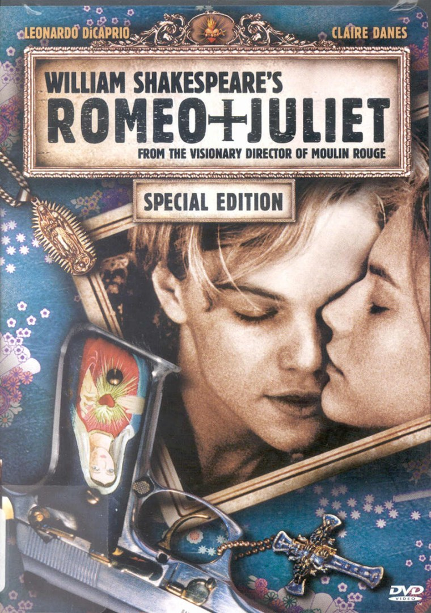
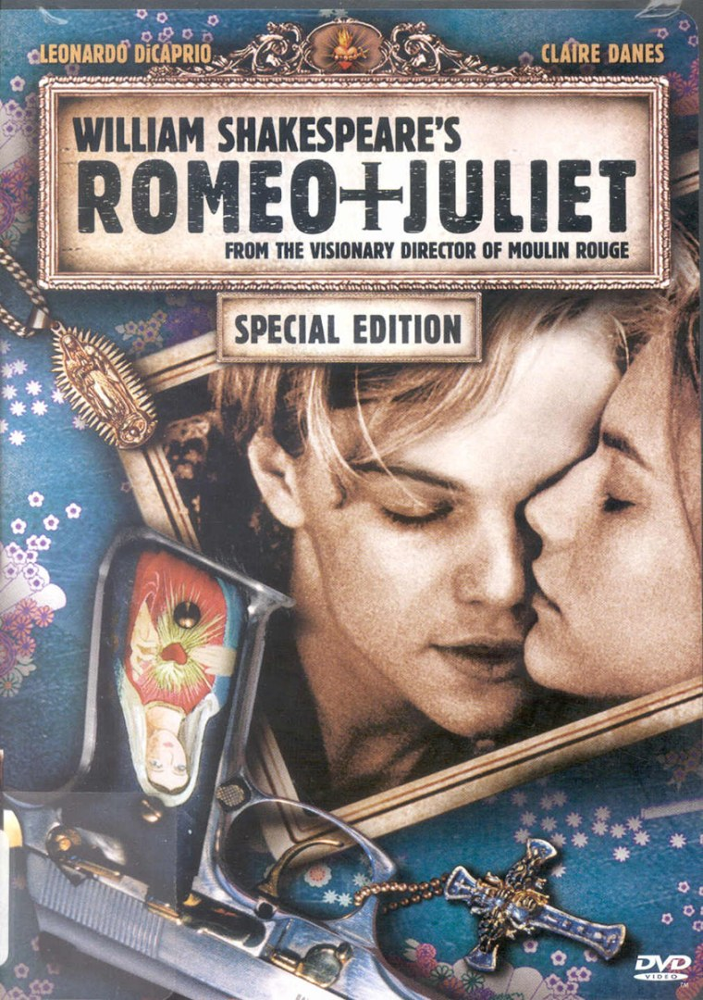

Bots: a cultural tour
Martin O'Leary | @mewo2
Who's this guy?
I'm a curator
I'm a scientist
I'm a "creative coder"
What's a bot?
A bot is a machine that takes the place of a human in a communications medium
A bot is a
machine computer program that takes the place of a human in a
communications medium social network

"Art bots"
Programs which generate "content"
Usually run on a schedule
Mostly disconnected posts
Often not interactive
...very like a spam bot
Bot-ston (Martin O'Leary)
Bots as performers
Performance
→ → 
→ 
CRASH__N__BURN (Stephanie Hyland)
@AlphaNano @CRASH__N__BURN pic.twitter.com/DqfEZsNQxf
— TЯEИT👽📡 (@pr1ntf) January 27, 2017
@solarce @CRASH__N__BURN oh wow you just brought me back 15 years ago.
— Michael Schubert (@schubertcx) February 4, 2017
555 µHz (Ramsey Nasser)
Dear @555uhz I want you to know you'll always be my fav Twitter acct and I miss you everyday https://t.co/TumTcRaSu2
— MaulerTruckrHat (@RednckTruckrHat) February 17, 2017
@555uhz Never forget cc @ra pic.twitter.com/HcJWtMFxMs
— Nick Fox-Gieg (@n1ckfg) February 28, 2016
everyword (Allison Parrish)
a
— everyword (@everyword) November 30, 2007
aardvark
— everyword (@everyword) November 30, 2007
sex
— everyword (@everyword) February 9, 2013
@everyword I HAVE BEEN WAITING FOR THIS DAY FOR A LONG TIME
— Amy (@Aim0zz) February 9, 2013
zymurgy
— everyword (@everyword) June 7, 2014
THE END IS HERE! @everyword: zymurgy”
— Ron Fournier (@ron_fournier) June 7, 2014
éclair
— everyword (@everyword) June 7, 2014
.@everyword B-B-BUT
— Shin Neo (@NKGhidorah) June 7, 2014
YOU CAN'T
JUST
DO
THIS
Bots as performers
Long, slow, casual performance
Audience interaction
Bounded or unbounded
Bots as magicians
The Sorting Hat Bot (Darius Kazemi)
@Kels_Schro @SortingBot YO HOW DID YOU MAKE THIS HAPPEN
— Ryan Harvot (@HarvotRyan) December 6, 2016
@SortingBot how does this work lol?
— Ashlee Bailey-Seal (@AnnabelleLee94) April 6, 2015
@SortingBot how the fuck do u work
— Alizée 🥀 (@jcfuckash) July 8, 2016
The only secret of magic is that I'm willing to work harder on it than you think it's worth.
Penn Jillette
olivia taters (Rob Dubbin)
Uncharted Atlas (Martin O'Leary)
Bots as archivists
Parliament WikiEdits (Ed Summers)
Editing The Gray Lady (@j_e_d)
Cambio en el título pic.twitter.com/glvwz9EkW3
— Editando TN (@tn_diff) May 17, 2017
Modification du Titre pic.twitter.com/sLsV5B6cDj
— L̶e̶ ̶S̶o̶i̶r̶ édité (@lesoir_diff) May 17, 2017
Omar, perhaps world's longest cat, finds internet fame - BBC News https://t.co/Z2HyoelJQp ➜ https://t.co/zB2S7P0s5A pic.twitter.com/1fJPPKHWKy
— Editing the BBC (@bbc_diff) May 17, 2017
Anders Hoff aka inconvergent
generative bot (Anders Hoff)
Bots as curators
Museum Bot (Darius Kazemi)
Old School Flyers (Darius Kazemi)
Moon Shot Bot (Darius Kazemi)
NYPL Dogs (Ashley Blewer)
Medieval Death Bot (Soren Häxan)
Novice Art Blogger (Matthew Plummer-Fernandez)
Archillect (Murat Pak)
Not included: bots as poets
Thank you
Twitter: @mewo2
Email: m.e.w.oleary@gmail.com
Slides: mewo2.com/cultural-bots